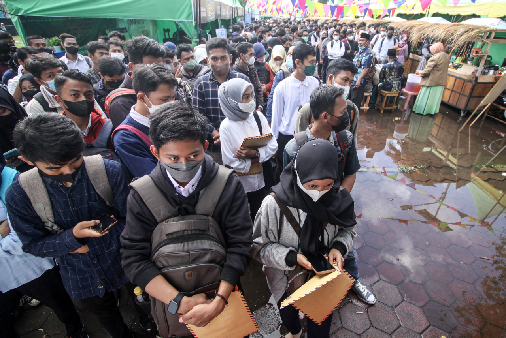

Pengangguran usia muda
Ketenagakerjaan merupakan segala hal yang berkaitan dengan tenaga kerja, dari sebelum bekerja, selama bekerja, hingga setelah bekerja. ini mencakup orang yang bekerja, mencari kerja, hubungan kerja, perlindungan kerja, pelatihan kerja, serta kebijakan pemerintah di bidang tenaga kerja.
Saat ini lembaga pemerintah pusat yang menyusun kebijakan, mengawasi, melatih, melindungi pekerja, serta memperluas kesempatan kerja untuk mencapai tujuan tersebut, bekerja sama dengan pemerintah daerah sebagai pelaksana di lapangan.
Salah satu fenomena yang saya ambil di Indonesia merupakan Pengangguran usia muda, saat ini anak anak muda di Indonesia banyak yang menggangur, alasan saya mengambil fenomena tersebut karena saya melihat anak anak usia muda setelah lulus kuliah yang belum mampu menyerap anak anak usia muda, serta ketidak sesuain ketrampilan setelah lulus sarjana.
Dalam beberapa tahun terakhir, tingkat pengangguran usia muda terus meningkat. Fenomena ini terutama terlihat pada kelompok usia 15–24 tahun, yang baru lulus sekolah menengah, perguruan tinggi, dan sedang mencari pengalaman kerja pertama. Banyak anak muda kesulitan memasuki pasar kerja karena lapangan pekerjaan yang tersedia tidak sebanding dengan jumlah pencari kerja. Selain itu, dunia kerja saat ini menuntut keterampilan yang lebih spesifik, sementara sebagian anak muda belum memiliki kompetensi yang sesuai dengan kebutuhan industri.
Saat ini anak anak muda kena dampak penganguran setelah lulus yaitu :
• Lulusan SMA/SMK, yang sering kali bersaing ketat untuk pekerjaan tingkat pemula.
• Lulusan perguruan tinggi, terutama yang berasal dari jurusan dengan lapangan kerja terbatas.
• Keluarga, yang secara tidak langsung menanggung beban ekonomi karena anak muda belum mandiri.
• Perusahaan, yang menghadapi kesenjangan keterampilan (skillgap) antara kebutuhan dan kemampuan pelamar.
• Pemerintah dan masyarakat, karena meningkatnya angka pengangguran memberi tekanan pada ekonomi dan stabilitas sosial.
Bagaimana terjadinya pengguran di usia muda:
1.Dampak Ekonomi:Saat ini Anak muda yang tidak bekerja dalam waktu lama kehilangan kesempatan membangun karier dan pendapatan. Keluarga merasa terbebani karena harus tetap mendukung kebutuhan mereka. Secara makro, tingginya pengangguran menghambat pertumbuhan ekonomi karena produktivitas tenaga kerja menurun.
2.Dampak sosialPengangguran yang teralu lama dapat menimbulkan frustrasi, stres, penurunan kepercayaan diri, hingga masalah sosial ini dapat meningkatnya kriminalitas atau perilaku berisiko di beberapa area.

Dalam data grafik yang dapat dilihat yang pengguran yang paling banyak adalah usia paling muda, dan sisanya usia lanjut yang tingkat pengganguran rendah.
Fenomena pengganguran usia muda saat merupakan kondisi ketika banyak berusia sekitar 15–24 tahun tidak memiliki pekerjaan, padahal mereka berada dalam fase hidup yang paling produktif dan sebagian besar sudah siap atau ingin memasuki dunia kerja. Situasi ini tidak hanya terjadi di negara berkembang, tetapi juga menjadi perhatian global karena menunjukkan adanya ketimpangan besar antara jumlah angkatan kerja muda dan kesempatan kerja yang tersedia.
Fenomena ini semakin kompleks ketika kita melihat bahwa banyak pemuda yang sudah menyelesaikan pendidikan formal tetapi tidak memiliki pengalaman kerja. Perusahaan sering menginginkan calon pekerja yang sudah siap pakai, sementara pemuda tersebut belum mempunyai portofolio, rekam jejak kerja, atau kemampuan praktis yang dibutuhkan.Akhirnya, mereka terjebak dalam lingkaran: tidak diterima karena kurang pengalaman, dan tidak dapat pengalaman karena tidak diterima kerja. Dan data saya ambil yaitu kumparan.com
Penyebab pengangguran usia muda saat ini terjadi ketidaksesuain skill, ini terjadi banyaknya anak muda yang tidak sesuai dengan ketrampilan, adanya transformasi digital dan modern yang membutuhkan skill saat ini dan lapanggan kerja tidak merata di Indonesia.
Dampak terjadi kepada usia anak muda yaitu Dampak sosial dan Dampak ekonomi,dampak sosial memicu konflik dalam keluarga akibat terjadinya pengangguran ,serta memicu kriminalitas karena tekanan ekonomi,Dampak bagi negara Tingginya angka pengangguran bisa memicu ketidakstabilan politik.dan Negara kesulitan bersaing secara global.
Solusi untuk mengatasi penganguran usia muda yaitu, memperluas akses informasi Dunia kerja untuk membuat daftar lowongan kerja yang mudah di akses bagi para pencari lowongan kerja, Membangun kolaborasi antara pemerintah,idustri,dan Pendidikan untuk pendidikan menyiapkan lulusan sesuai kebutuhan skill yang dibutuhkan untuk kerja nanti, dan pemerintah menyiapkan lapangan pekerjaan yang merata bagi kaum muda.
Fenomena pengangguran usia muda di Indonesia merupakan masalah besar yang muncul akibat ketidakseimbangan antara jumlah lulusan baru dan kesempatan kerja yang tersedia.usia muda saat ini menjadi kelompok paling terdampak karena masih minim pengalaman kerja, menghadapi persaingan ketat, serta belum memiliki keterampilan yang sesuai dengan kebutuhan industri modern. Kondisi ini semakin diperparah oleh ketidaksesuaian kemampuan (skill mismatch), transformasi digital yang cepat, dan lapangan kerja yang belum merata di seluruh daerah. Dampak pengangguran tidak hanya dirasakan oleh pemuda, tetapi juga keluarga, perusahaan, serta negara. Secara ekonomi, pengangguran menghambat produktivitas dan menambah beban keluarga. Secara sosial, kondisi ini memicu konflik keluarga, stres, kehilangan kepercayaan diri, bahkan potensi meningkatnya kriminalitas. Bagi negara, tingginya angka pengangguran dapat mengganggu stabilitas sosial dan menurunkan daya saing Indonesia dalam menghadapi perkembangan global.